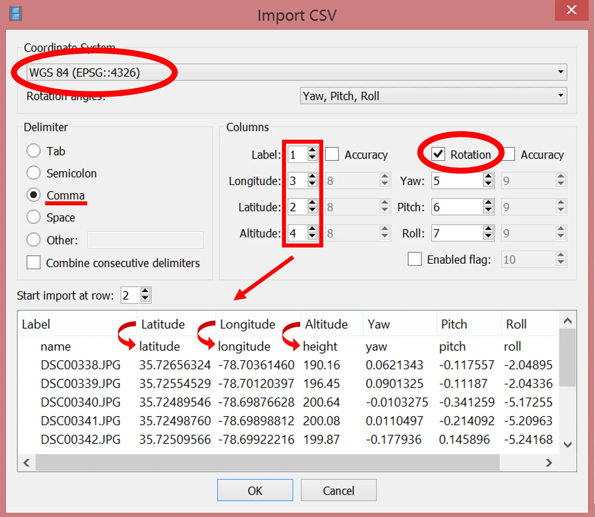
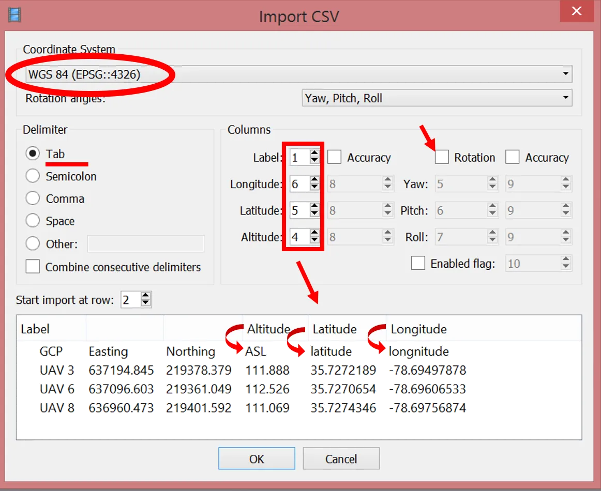
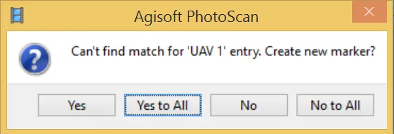
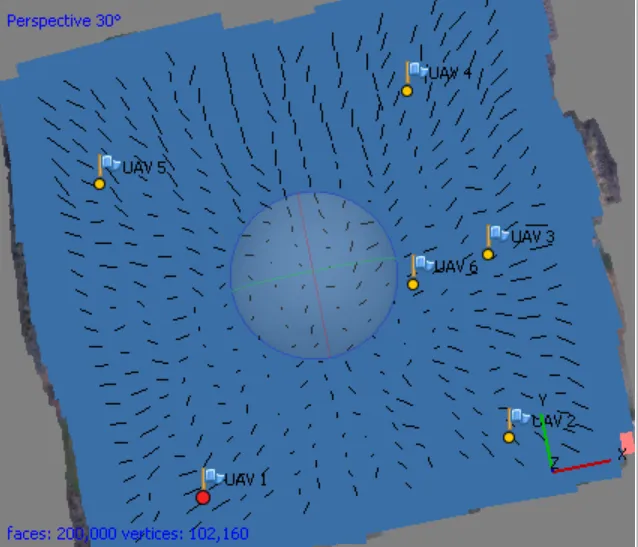
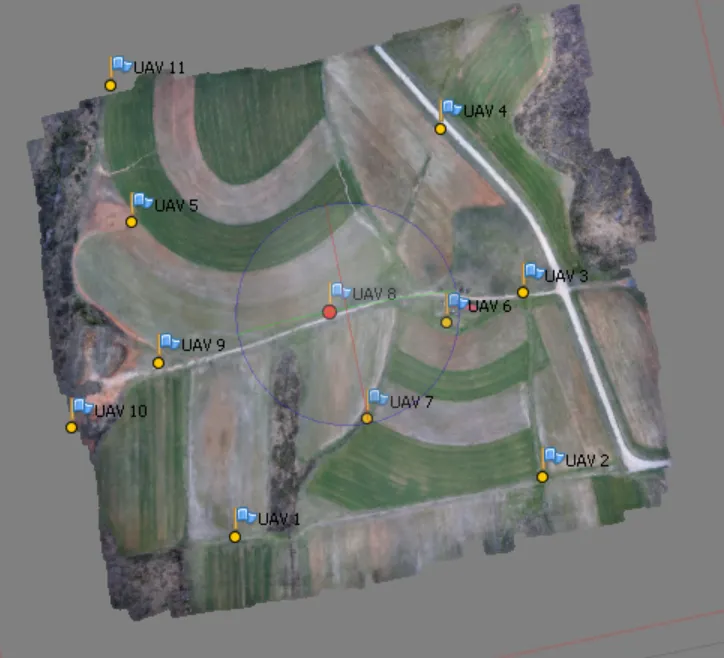
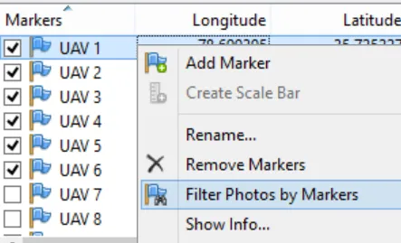
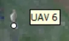
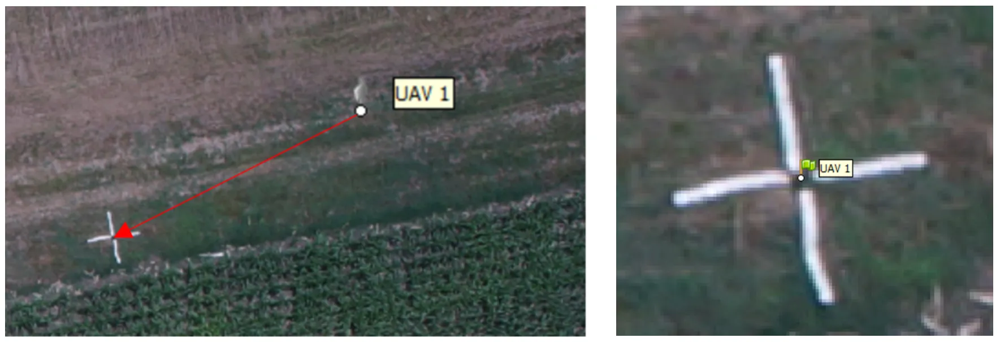
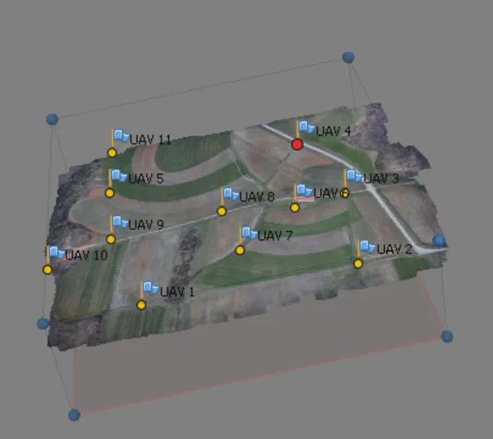

Assignment 2B
Imagery processing and structure from motion (SfM)
Task
Generate an orthomosaic and a digital surface model (DSM) from UAS photographs in Agisoft Metashape Professional 2.3.2, using ground control points, and explain the processing report the software produces, including the accuracy of your products.
The photos were taken by a Trimble UX5 fixed-wing UAS on September 22, 2016 over the NC State Lake Wheeler Road Field Laboratory (map). Processing can be time consuming, so the lab uses a subset of the flight and images downsampled by 50 percent. That is enough to finish in class; the same steps apply to a full flight at full resolution.
Metashape 2.x renamed several workflow steps. The instructions use the current names, with the older name in parentheses the first time it appears, so that older tutorials and videos still make sense. The screenshots are from Metashape 1.x and may show the old dialog names.
Keep your exported products and the processing report: Assignment 2C processes the same imagery in WebODM and compares the two.
Workflow overview (with GCPs)
Preparation
Data
- Download the data: photos, the flight log, and the coordinates of 3 GCPs
- Or use your own data set, with a flight log or geotags and GCP coordinates
Software
- Agisoft Metashape Professional 2.3.2 (installer). A license is provided for every student in this class; the activation instructions are on Moodle.
Preferences
Set these once, the first time you run Metashape; they are kept for later sessions.
Stage 1: Aligning photos
A preliminary alignment is needed before the GCPs can be located on the photos.
Adding photos
Loading camera positions
Click the Import icon in the Reference pane toolbar and select the camera positions file 2016_09_22_sample.txt.

Metashape reads camera orientation files in .csv, .txt, .tel, .xml, and .log formats. The Trimble Aerial Imaging log is a .jxl file; the provided .txt is a converted copy. To convert your own, use jxl2csv by Vaclav Petras.
Check that the columns are mapped correctly (name, latitude, longitude, altitude, yaw, pitch, roll); the column numbers can be adjusted at the top right of the dialog.
Aligning photos
Stage 2: Placing GCPs
Loading the GCP coordinates
Click the Import icon in the Reference pane toolbar and select the GCP file GCP_3.txt.

Check the column mapping and uncheck Rotation: GCPs are stationary and have no yaw, pitch, or roll.
Metashape asks Can’t find match for ‘UAV 3’ entry. Create new marker? Choose Yes to All; one marker is created for each named GCP in the file, listed in the Reference pane below the cameras.

Placing the markers on the photos
Each GCP now has to be located on every photo that shows it. The instructional video shows the process.
The Model pane shows the approximate marker positions; they are easier to see with cameras hidden (Menu > View > Show/Hide Items > Show Cameras).


Right-click a marker in the Reference pane and choose Filter Photos by Marker.

The Photos pane now lists only the images that probably show the selected GCP.
This filter works because the photos are geotagged. With non-geotagged photos, or a site you do not know, build the point cloud or even the model and texture first (the steps in Stage 3) so that the Model pane shows a recognizable preview of the area rather than only tie points.
Double-click a photo thumbnail to open it next to the Model pane. The marker appears as a grey icon

; drag it onto the center of the target.
Once placed, the marker turns into a green flag: it is enabled and will be used in the adjustment.
Repeat on the next photo. After the marker has been placed on two photos, Metashape predicts its position on the remaining photos closely; drag it slightly to enable it (green flag) or leave it grey to exclude that photo.
Filter photos by marker again after each marker: as the positions improve, more photos that show the GCP appear in the Photos pane.
This lab uses 3 GCPs, the mathematical minimum for defining the coordinate system. Reliable error estimates need at least 4, and 5 or more spread across the site, including its center, keep the terrain from tilting or doming. Real projects also withhold some surveyed points as checkpoints to measure the error independently.
Click Save .
Optimizing the alignment
Click View Errors in the Reference pane to see the current errors. The best results come from optimizing twice: first on the camera coordinates only, then on the GCP markers only.
In the Reference pane, leave all cameras checked and uncheck all markers (select one, press Ctrl+A, right-click, Uncheck), so that this first pass adjusts on the camera coordinates only.
Click Optimize Cameras in the Reference pane toolbar. In the dialog, check every camera calibration parameter (f, cx, cy, k1 to k4, p1, p2, b1, b2) so that all of them are refined.
Depending on the Metashape version, the Optimize Cameras icon is a star or a camera with a wrench.
Optimizing on the markers
In the Reference pane:
- uncheck all cameras (select one, press Ctrl+A, right-click,
Uncheck) - check all markers (select one, press Ctrl+A, right-click,
Check)
Click Settings and leave the default marker accuracy (0.005 m), or enter your GCPs’ surveyed precision if you know it (0.01 to 0.05 m is typical for RTK GNSS).
Click Optimize Cameras again with the default options, then Save .
View Errors now shows how much the optimization reduced the marker errors. Note the values: they go in your report.
Stage 3: Building geometry and products
Before building the point cloud, check the bounding box of the reconstruction: it must contain the whole area of interest in all three dimensions, and should not be much larger, since the box size drives processing time and memory.
Adjust it with the Resize Region and Rotate Region tools. The red face of the box must be at the bottom.

The next steps are the slow ones. Run them one at a time, or queue them with batch processing (end of this stage) and let them run unattended.
Editing the model
If the image overlap was insufficient, the model has holes. Close them only if you need a watertight model, for example for volume calculations, where 100 percent of holes must be closed.
Building the DEM
Building the orthomosaic
Batch processing
Stage 4: Exporting results
Export is disabled in demo mode; make sure your license is activated.
Orthomosaic
Digital surface model
Processing report
Optional exports
Report
Prepare a report (3 to 5 pages including figures) on generating the orthomosaic and DSM:
- Workflow: the steps you ran and the parameters you chose at each one (alignment accuracy, point cloud quality and depth filtering, model surface type, DEM and orthomosaic coordinate system), and how long the slow steps took on your machine.
- Products: figures of the orthomosaic and the DSM, with the coordinate system and cell size stated.
- The processing report: explain what the Metashape report says about your project: number of images and tie points, flying altitude and ground resolution, the overlap map, the camera calibration and its residuals, the camera location errors, and the ground control point errors before and after optimization. State the accuracy of your products and which number in the report supports it, and say why this report has no checkpoint error.
- Discussion: what would you change to improve the accuracy (more or better distributed GCPs, checkpoints, higher quality settings, RTK positions), and what would it cost in field or processing time?
Submission
Upload to Moodle, Assignment 2B:
- Your report as a PDF, with the Metashape processing report attached or included as an appendix.
- Optional: your exported orthomosaic and DSM (GeoTIFF) if they are under the Moodle size limit, or a link to them.
Grading
- Workflow: every step and parameter is stated, so that someone else could reproduce your products.
- Products: the orthomosaic and DSM are shown, georeferenced in EPSG:3358, and described.
- Report interpretation: the accuracy figures are identified correctly and explained, not just copied; since this lab has no checkpoints, the difference between control error and checkpoint error is discussed conceptually.
- Discussion: improvements are tied to the concepts from the lectures.
- On-time submission.